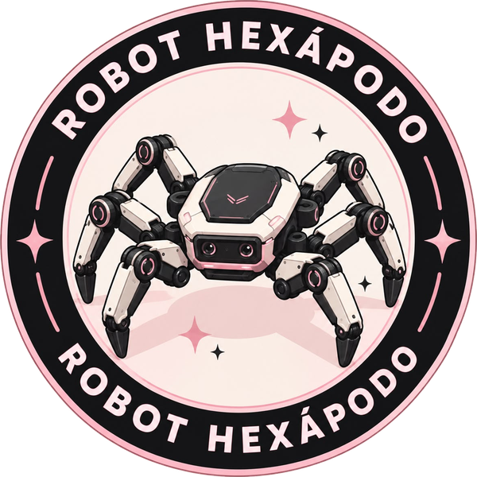

Innovación que camina sobre seis patas.
Tecnología inspirada en la naturaleza.

Nuestro proyecto consiste en el diseño y construcción de un robot hexápodo, un prototipo de seis patas inspirado en el movimiento de los insectos. A través de la robótica, la física, la electrónica y la mecánica, buscamos comprender cómo una máquina puede desplazarse, mantener su estabilidad y adaptarse a diferentes tipos de terreno.
Conoce nuestro robot Quiénes somosNuestro proyecto es la construcción de un robot hexápodo educativo, formado por seis patas que trabajan de manera coordinada para permitir su desplazamiento y mantener su estabilidad.
El prototipo combina varias áreas de la ciencia:

Nuestro proyecto transforma conocimientos científicos y tecnológicos en un prototipo funcional. El robot permite demostrar de manera práctica conceptos como las Leyes de Newton, fricción, torque, movimiento, equilibrio, transmisión de movimiento y programación, mientras desarrollamos habilidades de creatividad, investigación y trabajo en equipo.
"Inspirados por la naturaleza, impulsados por la tecnología."

Descubre su funcionamiento, los principios físicos que utiliza, sus materiales, aplicaciones y el proceso detrás de su construcción.
Conoce nuestro robot